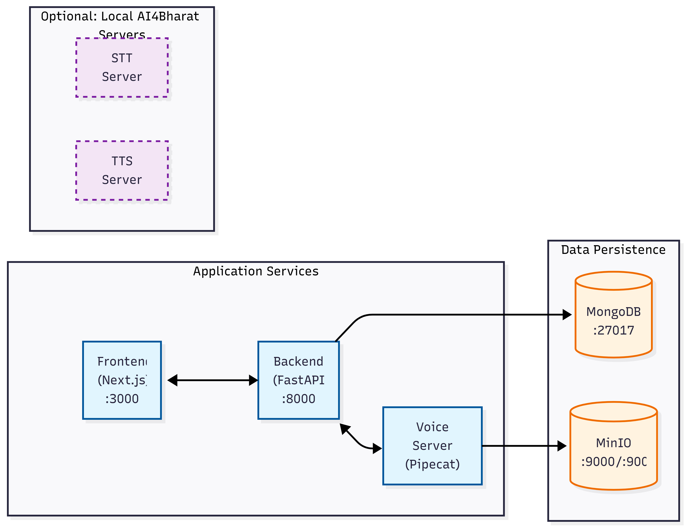

VoiceERA Documentation¶
Welcome to the VoiceERA documentation! This is your comprehensive guide to understanding, deploying, and developing with the VoiceERA platform.
What is VoiceERA?¶
VoiceERA is a complete voice AI platform with telephony integration, featuring:
- 🎤 Real-time Speech-to-Text (STT) - Convert spoken words to text
- 🔊 Text-to-Speech (TTS) - Convert text back to natural-sounding speech
- 🤖 LLM-Powered Conversational Agents - Intelligent voice interactions with language models
- ☎️ Telephony Integration - Seamless voice call handling with Vobiz platform
- 📊 Comprehensive Dashboard - Manage agents, campaigns, and analytics
Key Features¶
Multi-Language Support¶
Support for Indic languages and English with AI4Bharat services integration.
Flexible AI Services¶
Integration with multiple AI providers: - OpenAI (GPT-4, GPT-3.5) - Deepgram (high-quality STT) - Cartesia (advanced TTS) - AI4Bharat (Indic languages) - Local LLM support
Enterprise-Grade¶
- MongoDB for scalable data persistence
- MinIO for distributed object storage
- JWT-based authentication & authorization
- Role-based access control
- Docker & Kubernetes ready
Architecture at a Glance¶

Quick Navigation¶
New to VoiceERA?¶
Start here to get up and running:
- Installation - Set up your development environment
- Quick Start - Get VoiceERA running in minutes
- Configuration - Configure services and environment
For Developers¶
Extend and customize VoiceERA:
- Local Development - Set up development environment
- REST API - REST API documentation
- WebSocket API - Real-time communication
- Contributing - Contribution guidelines
For Operations & DevOps¶
Deploy and manage VoiceERA:
- Docker Deployment - Docker & Docker Compose setup
- Production Deployment - Production-grade deployment
- Environment Variables - Configuration reference
Understanding the System¶
Learn how VoiceERA works:
- System Overview - High-level architecture
- System Design - Detailed system design
- Data Flow - How data moves through the system
Microservices Overview¶
| Service | Port | Technology | Purpose |
|---|---|---|---|
| Frontend | 3000 | Next.js + React | Web dashboard for agent/campaign management |
| Backend | 8000 | FastAPI + Python | REST API for data management & orchestration |
| Voice Server | 7860 | Pipecat + Python | Real-time voice processing & agent orchestration |
| MongoDB | 27017 | MongoDB | Primary data store |
| MinIO | 9000/9001 | MinIO | Object storage for recordings & transcripts |
| STT Server | 8001 | AI4Bharat | Local Indic speech-to-text (optional) |
| TTS Server | 8002 | AI4Bharat | Local Indic text-to-speech (optional) |
Prerequisites¶
Before you begin, ensure you have:
- Docker & Docker Compose - For containerized deployment
- Git - For version control
- Node.js 18+ - For frontend development (optional)
- Python 3.10+ - For backend/voice development (optional)
- GPU (optional) - For running local AI4Bharat services
Next Steps¶
- Install VoiceERA - Get your environment ready
- Run Quick Start - Launch all services
- Explore Architecture - Understand the system
Support & Community¶
Version: 1.0.0
Last Updated: January 2026